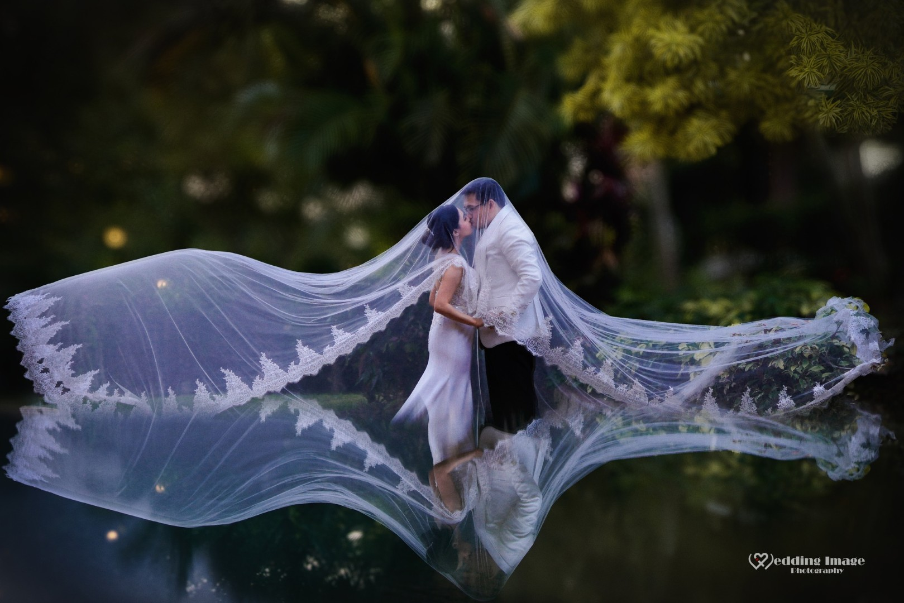
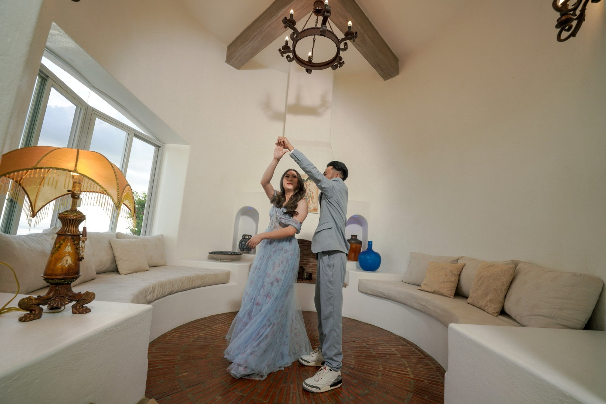

Capturing your most precious moments with artistic vision and timeless elegance
Back to Home PageMoments captured with passion and precision


Everything you need to know about Wedding Image Philippines
Wedding Image Philippines was established in early 2014 and has been serving clients for more than 11 years.
The founder, Mrs. Wennie Landicho, has had a passion for photography since childhood. Her dedication to the craft eventually led her to resign from her previous job and pursue the business full-time.
The company offers both photography and videography services. Clients may choose photo-only or video-only packages for weddings, debuts, corporate events, anniversaries, and other special occasions.
Wedding Image Philippines caters primarily to couples getting married, as well as clients hosting debuts, birthdays, anniversaries, and corporate events.
Most bookings are made through venue partnerships in Tagaytay as part of all-in packages. Clients also book directly through the company's Facebook page, Messenger, and phone calls. Online bookings and Zoom consultations became more common during the pandemic.
The team uses a manual calendar system and separate monitoring files to keep track of weddings, prenups, and shoots. This helps ensure proper coordination among staff and prevents scheduling conflicts.
The business is equipped with professional-grade cameras, lenses, lights, tripods, flashes, audio systems, and laptops. Social media platforms are used for marketing and client communication.
Promotions are carried out through social media posts and boosted content, as well as tie-ups with venues. In the past, the company also participated in bridal fairs to reach potential clients.
The owners, Mrs. Wennie and Mr. Ariel Landicho, ensure personal involvement in every project. They focus on professionalism, reliability, and maintaining strong client relationships, which sets them apart in the industry.
A website allows Wedding Image Philippines to showcase more details than a Facebook page can provide. It serves as a professional platform to display background information, awards, old photos, and videos, giving clients a complete view of the company's work and achievements.
We're here to help you plan your perfect wedding photography experience
Contact Us Today